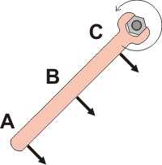
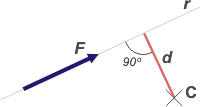
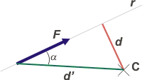
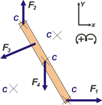

|
NO ME SALEN
(EJERCICIOS RESUELTOS Y APUNTES TEÓRICOS DE FÍSICA)
Estática
|
|

|
ESTÁTICA DEL CUERPO EXTENSO - MOMENTO
En este capítulo vamos a considerar cuerpos y tener en cuenta su extensión, su postura y, sobre todo, su capacidad de rotar. Veremos que el lugar del cuerpo sobre el que actúa una fuerza no es irrelevante ya que actuando en distintas posiciones de un mismo cuerpo se obtienen efectos diferentes.
La magnitud que mejor describe esta propiedad se llama momento.
Momento de una fuerza, M
(También llamado torque o momento de torsión)
Prestale atención a este ejemplo: supongamos que queremos aflojar una tuerca que está muy adherida al bulón, todo oxidado, casi clavados. Lo intentamos con una llave fija de 50 cm de largo y nos aparece la intriga: ¿en qué lugar de la llave conviene poner la mano para hacer fuerza? |
|  |
Seamos más precisos: ¿tirarías del punto A, del B o del C?
Si elegiste el A elegiste correctamente, igual que 27 de cada 28 personas que aún sin haber estudiado Física en su vida confían en la intuición y hacen bien. (Me río de los colegas que dicen que la Física es anti-intuitiva).
Tu fuerza es la misma en los tres casos, pero tenés mucha más probabilidad de éxito si la aplicás en el punto A de la llave, que en ningún otro lado. |
|
|
|
Efectivamente, la eficacia de tu fuerza para lograr una rotación crece si la aplicás en forma distante al objeto que querés hacer rotar. Y con esto estamos como para hacer una definición:
Se llama momento de una fuerza y se simboliza M al producto entre la fuerza, F, y la distancia, d, entre la recta de acción de la fuerza, r, y el centro de rotación, C.
CMF = F . d
|
|
Nosotros usaremos el símbolo
M
también se utiliza el símbolo
τ
(letra griega minúscula tau) |
|
|  |
Notarás que la distancia entre una recta y un punto se obtiene trazando una perpendicular a la recta que pase por el punto. Esa distancia no es otra que la distancia mínima entre C y r.
El momento de una fuerza es un vector (pero en este curso inicial lo trataremos como un escalar, o, mejor dicho, tomaremos de ese vector su parte escalar -su módulo- que es la parte más descriptiva de la magnitud). |
|
|
|
Las unidades en que mediremos los momentos deberán ser:
[M]= Nm (newton por metro)
Arbitrariamente, le asignaremos a los momentos un signo (positivo o negativo) según tiendan a provocar un giro horario o antihorario. No hay criterio universal para esta asignación, de modo que podés optar alegremente frente a cada ejercicio... ¡siempre y cuando se lo comuniques a tus lectores! (Será parte de nuestro SR). |
|
No caigas en la tentación de medir torques en joules.
Ya sé que
N . m = J, pero al joule lo reservamos para medir energías, y el torque es otra cosa. |
|
|  |
Si en lugar de considerar a d, tenés ganas de considerar a d', la distancia entre el punto de aplicación de la fuerza y el centro de giro o centro de momentos, entonces podemos expresar al momento de la fuerza así:
CMF = F . d' . sen α
|
|
|
|
Esto nos lleva a una conclusión muy sencilla que vos podés verificar mentalmente con nuestro ejemplo de la tuerca oxidada y la llave fija. Si aplicás tu fuerza en la posición A (como habíamos quedado) tendrás mayor efectividad si la ejercés a 90 grados de la llave (sen 90° = 1); y será totalmente inefectiva si la ejercés en la misma dirección que la llave (sen 0° = 0), además de que se reirían de vos.
Advertencias: hay cuerpos que tienen un centro de rotación casi obligado: una tuerca en torno a su eje, las puertas y ventanas en torno a la bisagra, las ruedas, los engranajes, etcétera, pero la mayoría de los cuerpos extensos podrían rotar entorno a cualquier eje, incluso los que te mencioné recién. Además, ya te habrás dado cuenta de que el momento de una fuerza depende del punto que consideremos como centro de rotación.
Volvamos al asunto de la estática y los equilibrios. Para un cuerpo extenso vale el mismo considerando que para un cuerpo puntual: como no está acelerado la suma de las fuerzas que actúan sobre él debe valer cero. Pero como tampoco debe rotar, la suma de los momentos de todas las fuerzas que actúan sobre él también debe valer cero.
Miralo de este modo: para cualquier fuerza cuyo momento no nulo tienda a hacer rotar al cuerpo en alguna dirección, debe haber al menos otra fuerza que tenga el momento opuesto y se contraponga a esa rotación. Generalizando: si un cuerpo no rota es porque la suma de todos los momentos de todas las fuerzas que actúan sobre él es igual a cero.
ΣM = 0 (el cuerpo no rota)
Pero ¿qué punto elegimos para plantear los momentos de las fuerzas? ¡Cualquiera! Si el cuerpo no rota... ¡no rota en torno a ningún punto! |
|
|
|  |
Cuando un cuerpo no rota, cualquier punto (incluso puntos que se encuentran fuera del cuerpo) sirve para usar como centro de rotación y plantear los momentos de todas las fuerzas, y afirmar que la suma de todos esos momentos es nula.
ΣCM = 0 (cualquiera sea C)
Esto es una ventaja, ya que nos da libertad a nosotros de elegir el punto centro de momentos que más nos convenga para resolver un ejercicio. |
|
|
|
Resumiendo: si nos afirman que un cuerpo extenso está en equilibrio, podemos plantear para todas las fuerzas que actúan sobre ese cuerpo que:
ΣFx = 0
ΣFy = 0
ΣM = 0
Esas 3 ecuaciones (es el caso más general, pero serían 2 si todas las fuerzas fueran codireccionales, o 4 si en una situación tridimensional) describen el equilibrio. |
|
En muchos textos
aparece la denominación cuerpo rígido en lugar de cuerpo extenso
Aunque no aluden a la misma propiedad son equivalentes. |
|
| |
|
|
| CHISMES IMPORTANTES: |
|
|
- Tal vez ya hayas estudiado (o estarás por hacerlo) las magnitudes trabajo y energía. Esas magnitudes, que nada tienen que ver con el momento de una fuerza, se miden en las mismas unidades: Nm. No dejes que esto te confunda. Las primeras son escalares y en cambio las que estamos estudiando en esta lección son vectores (aunque aquí no explotemos esa propiedad). Por eso a las primeras les damos una unidad especial, el joule, J (J = Nm), en cambio para los momentos usamos siempre Nm.
- Si con la fuerza y la distancia armás un plano, la dirección de vector momento de la fuerza es perpendicular a ese plano.
- Casi todas las herramientas manuales funcionan gracias a la propiedad de los momentos de las fuerzas que realizan las manos.
- Las palancas, son una aplicación de la propiedad de los momentos.
|
|
|
| PREGUNTAS CAPCIOSAS: |
|
 |
- Por qué los picaportes y manijas de las puertas están colocados en el lateral opuesto a las bisagras?
- Cuando miro un objeto y lo veo girar en sentido antihorario, ¿gira en el mismo sentido para cualquier otro observador?
|
|
| |
|
| Algunos derechos reservados.
Se permite su reproducción citando la fuente. Última actualización may-12. Buenos Aires, Argentina. |
|
|
 |
|